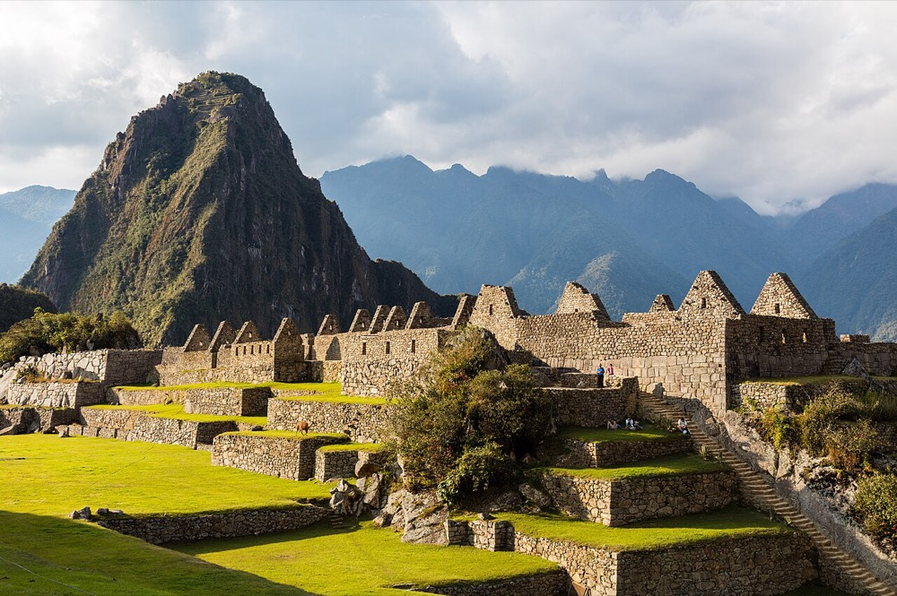

Перу

Перу — страна высоты: здесь даже впечатления идут с акклиматизацией. Кузко — бывшая столица инков на 3400 метрах: стены инков несут колониальные балконы без раствора и шва, и они стоят после землетрясений, которые смеялись над цементом. Разгон: первый день — спокойный, мате-де-кока, чай, который и правда помогает. Мачу-Пикчу: автобус из Агуас-Кальентес к рассвету, туман поднимается, и город открывается по кадру; гида берите — история расшифровки стоит рассказа. Путь инков или поезд по живописной долине Урубамбы — оба вида честные. Виникунка — радужная гора на 5000 метров: минералы красят склоны в семь цветов, идти тяжело и красиво. озеро Титикака с плавучими островами урос — камыш, который живёт как город. Кухня — лучшая в Латинской Америке: севиче перуанское, ломо солтадо и 4000 сортов картофеля — не шутка, они их считали. чича морада, фиолетовая. Воздух тонкий, памятники плотные — Перу остаётся и в легких — тоже: воздух тонкий.
Что знать перед поездкой
- День разгона в Кузко — без маршрутов
- Мачу-Пикчу — билеты за месяц и на рассвет
- Кока-матэ — чай, который помогает